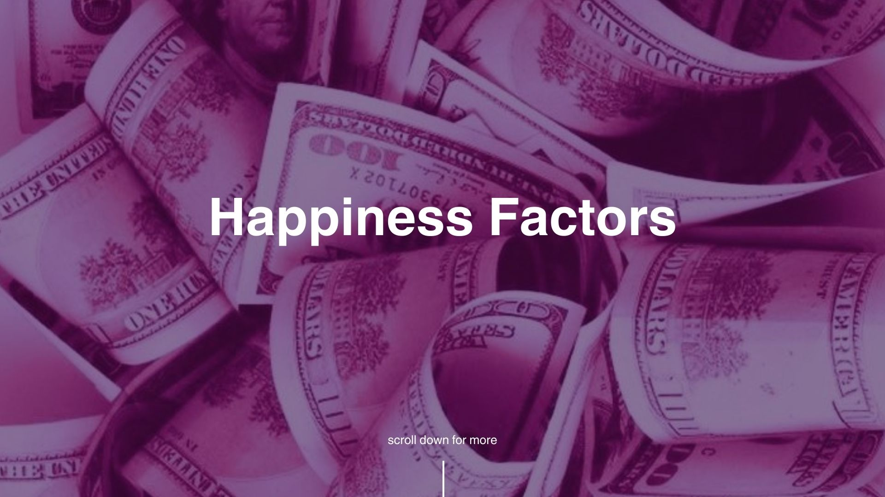

Question 1 : Do happier countries have more consistent happiness?
Insights
Countries with a higher ladder score (a way of measuring happiness through self-reported life satisfaction) tend to have more consistent levels of happiness, meaning that data for countries with higher levels of happiness is generally more accurate than in countries with lower levels of happiness. Moreover, the few countries with the highest levels of happiness are European countries. The two countries with the lowest happiness score with high accuracy appear to be Afghanistan and Lebanon, reflecting the instability in these countries due to other factors that might lead to an overall very low self-reported happiness score.
Question 2: How does income compare to the overall happiness of a country? Is there any correlation?
Insights
There is a clear upward trend in the density heatmap of ladder score and income. However, happiness can not be explained by income alone, wealthier countries do not necessarily have a higher level of happiness. The most dense areas of the graph shown in yellow are present in the countries that lie within the $0-$20,000 range of income per capita.
Question 3: To which extent do social support, life expectancy, freedom, affect live evaluations (happiness) in each country?
Insights
Countries with higher social support, life expectancy, and freedom, have higher levels of happiness as well. Freedom and social support are closely linked for each country, although life expectancy is in some cases high when freedom, social support, and ladder are low or the other way around. Furthermore, many countries are clustered together within a social support score range of 0.9-0.95, and life expectancy of 70-72.
Question 4: Trends between factors of global well-being - How does social support, hapiness, life expectancy, and GDP all relate?
Insights
Countries with higher social support, seen in the color scale tend to have a higher life expectancy, representing a linear correlation. There is not as large of a
correlation between Health, seen in the size of the display, and life expectancy due to lower and higher life expectancy having similar Health metrics. Lastly, there is clustering
with either higher GDP relating to happiness and Life expectancy and vice versa, which can draw the insight that there is a connection between the well being factors and the economy.